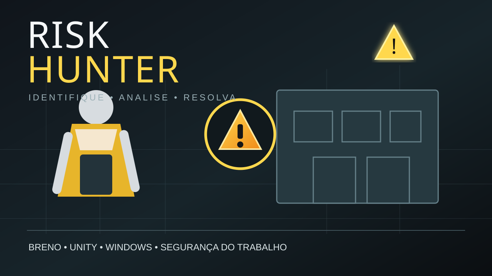

Encontre
Os pontos de risco possuem uma exclamação no ambiente para ajudar o jogador a identificá-los.
Você é um técnico em segurança do trabalho contratado pelo Senac Taguatinga. Sua missão é explorar o ambiente, localizar situações de risco e responder corretamente como cada uma deve ser classificada ou resolvida.

Os pontos de risco possuem uma exclamação no ambiente para ajudar o jogador a identificá-los.
Ao interagir, o jogo abre perguntas sobre o tipo de risco e sobre a melhor forma de resolver a situação.
Respostas corretas completam o risco, aumentam a pontuação e aproximam o jogador da vitória.
O jogador precisa reconhecer o tipo de risco e escolher uma ação para evitar a situação.
O quiz também trabalha riscos físicos ligados ao equipamento, com alternativas como vibração, calor e umidade.
Outro ponto pede a identificação do risco do objeto e testa a leitura da situação.
O jogador avalia possíveis consequências, incluindo contaminação, e precisa responder corretamente.
A situação exige reconhecer o risco e escolher uma resposta adequada entre opções de intervenção.
Uma situação clássica de acidente: o quiz pede a classificação e a melhor forma de corrigir o problema.
Ande para frente, trás e para os lados.
A tecla espaço é usada para pular.
Control reduz a altura do personagem para agachar.
Mova o mouse para olhar ao redor e use a roda para ajustar o zoom.
O mapa do build inclui áreas identificadas como cozinha, floricultura, biblioteca, laboratórios, salas de aula, banheiros, administração, armazém, salão de beleza e entrada do Senac.
A proposta transforma o espaço em um exercício de observação: andar pelo cenário, reconhecer o que pode causar problema e validar a análise por meio do quiz.
Desenvolvimento do Risk Hunter
Build para Windows. Baixe o ZIP, extraia a pasta e execute Risk Hunter.exe.
↓ Baixar Risk Hunter